Part 2 moves Black Belt onto the dashboard’s shared parts. These three details are left to decide. Amber outlines mark what differs from today. Photographs are real screens from the preview app; the “after” looks are the same screens with only the button words or style classes changed in the browser (no code changed).
Rule v1.008: the button that changes nothing sits on the LEFT, the action on the right (red when it loses something). Black Belt already has that order; only the left word is in question. The Undo payment box was already decided as “Keep payment” and is not shown. Star says “Keep payment”, “Keep refund”, “Keep candidate”. (a) has a blue action button today, (b) has the red one.
(a) Undo Mark as sent · Results tab · PC
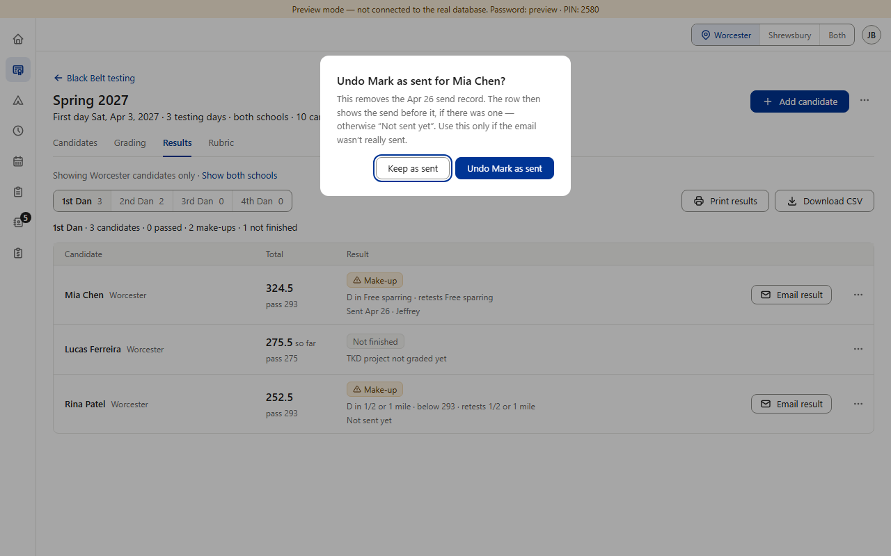
(a) phone
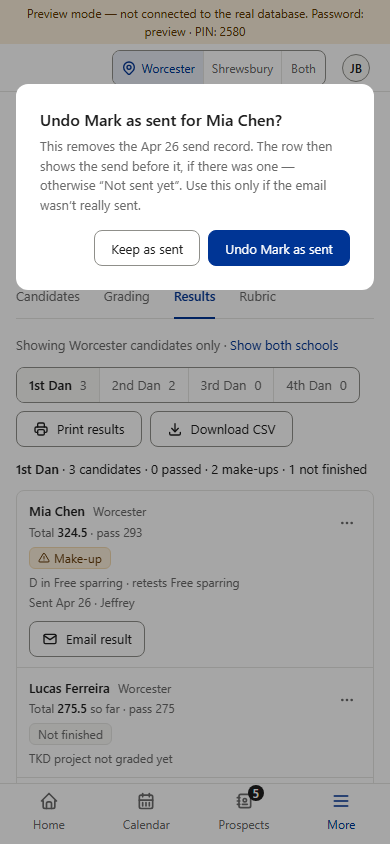
(b) “Delete personal details now?” · PC
(b) phone
(a) Undo Mark as sent · Results tab · PC
(a) phone
(b) “Delete personal details now?” · PC
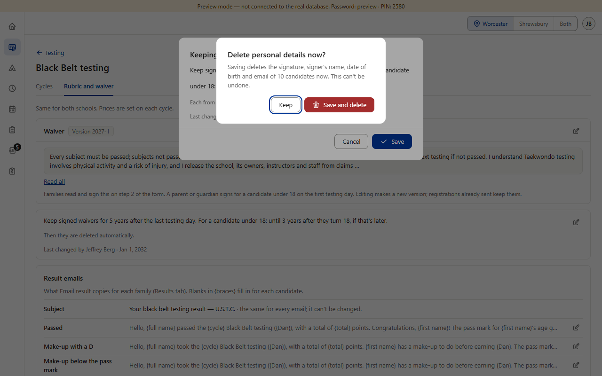
(b) phone
(a) Undo Mark as sent · Results tab · PC
(a) phone
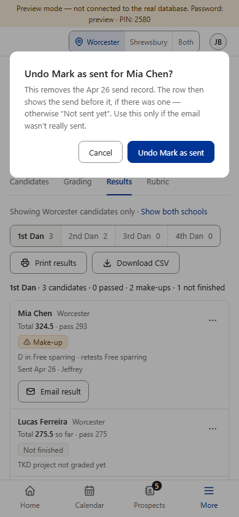
(b) “Delete personal details now?” · PC
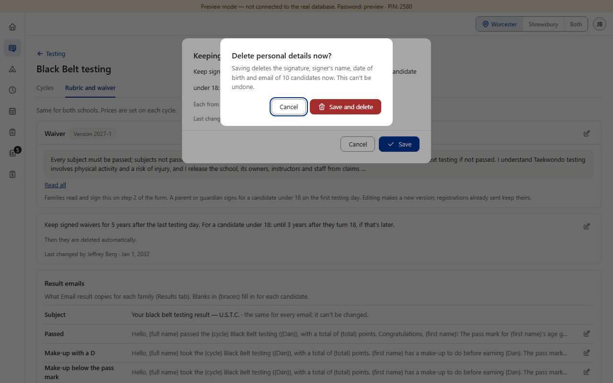
(b) phone
A: “Keep as sent” and “Keep details” say exactly what the tap preserves, in the same pattern as Star’s “Keep payment”. Cost: two new words in Black Belt’s text file; the left button gets wider (106 and 104 px against 72) but still fits both box widths at 390.
B: one short word on both boxes; the same word could serve every future box. Cost: next to “Undo Mark as sent” or “Save and delete”, “Keep” alone doesn’t say what is kept, and it differs from Star’s pattern.
C: no work. Cost: the box is the only kind in the dashboard that still says “Cancel” once Color Belt, Star and Camps use “Keep …”; the rule is already met by position, so this is polish, not a defect.
Black Belt’s own Choice takes style classes: full width, compact, “locked” (gray words) and “invalid” (amber border). The shared ChoiceGroup takes no classes and has no locked or invalid look; it only tells screen readers. Where Choice is used: Add and Edit candidate, Edit cycle, Add cycle, Record payment, Cycles tab, the rubric and subject dialogs (14 uses in 9 files). Left: A, the shared look. Right: what B and C show (today’s look).
Add candidate · School and Testing for (Dan) · PC. The Dan box has its amber “missing” border here.
Edit details by staff · Dan is locked after a payment · PC
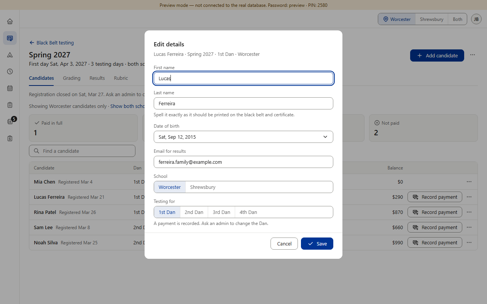
Record payment · Method · PC
Edit details by staff · phone
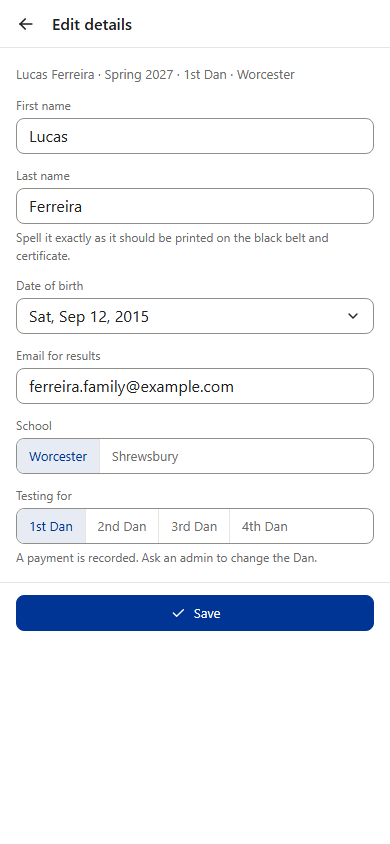
Add candidate · School and Testing for (Dan) · PC. The Dan box has its amber “missing” border here.
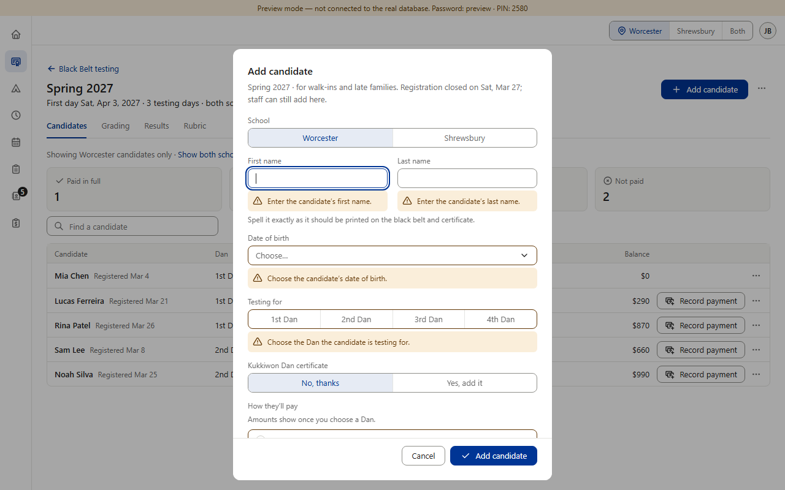
Edit details by staff · Dan is locked after a payment · PC
Record payment · Method · PC
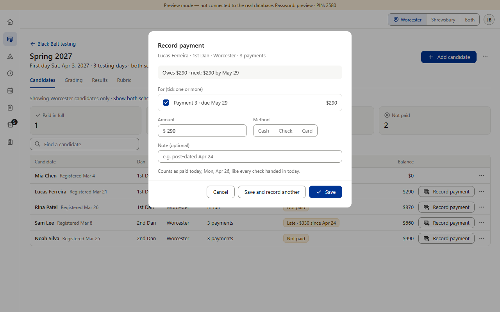
Edit details by staff · phone
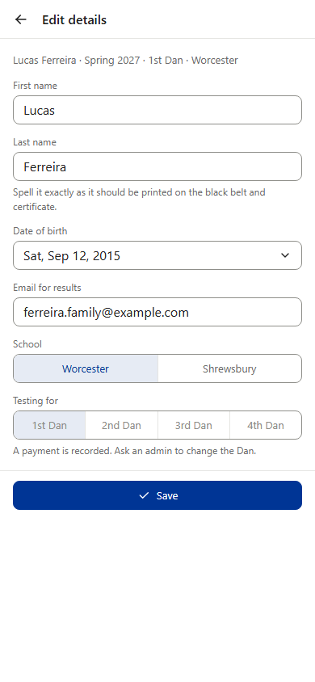
A: least code, and one look for every section. Honest cost, all visible above: the box frame still stretches the whole row but the buttons stay small and left (an empty tail); the locked Dan no longer looks locked (its words stay blue and clickable-looking though a tap does nothing; screen readers still hear “dimmed”, the hint line below stays); the missing-Dan amber border is gone (the amber message under it stays); Method gets wider than its words. The gray-selected look some rubric choices use (a separate class) is not photographed here.
B: keeps every look. Cost: the Dashboard core session must first add ways to pass them to the shared part (fill, compact, locked, invalid); Black Belt waits for that and every other section gets the new options too.
C: no switch, no wait. Cost: Black Belt keeps its own ~60-line copy of the part; any later change to the shared choice (a new key behavior, a new look) will not reach Black Belt unless someone copies it by hand.
Today it fills the whole row on phones (390 and 320). The rulebook (§2.1) names no such exception, and Star’s event header keeps its buttons their own size, left, under the summary line.
390 wide
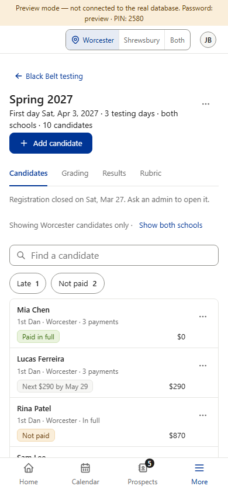
320 wide
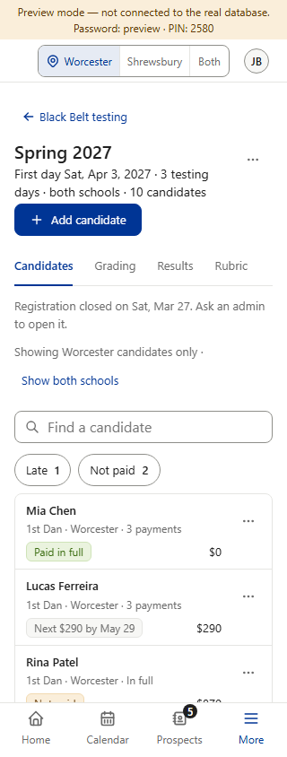
390 wide
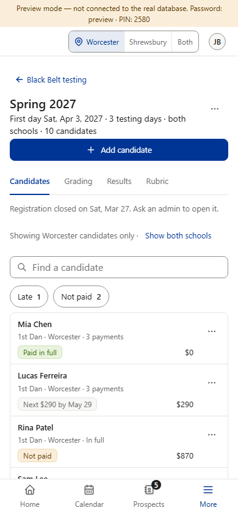
320 wide
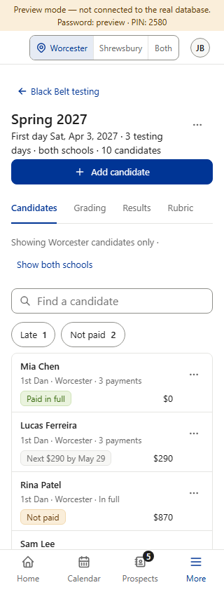
390 wide
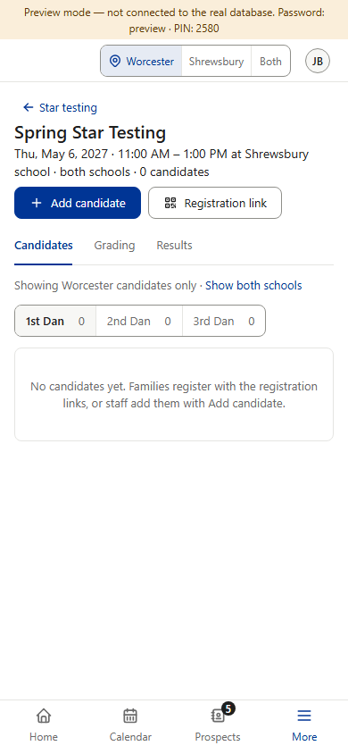
A: the same header shape on both sections, no exception to write down. Cost: a 142 px wide, 36 px tall target instead of a whole row, a little harder to hit with a thumb; at 320 the row beside it stays empty.
B: a whole-row target is easiest to tap, and nothing changes. Cost: Black Belt stays the only section with a full-width header button, so the rulebook needs an exception line (or Star and others would be asked to follow).